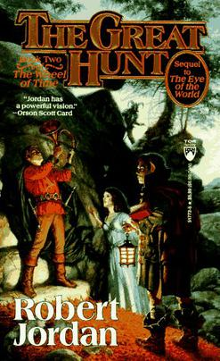

Druga knjiga serijala “Kolo vremena” - potraga za Rogom Valerea

“Veliki lov” (engl. The Great Hunt) nastavlja epsko putovanje Randa al’Thora i njegovih prijatelja. Nakon događaja iz “Oka svijeta”, junaci se upuštaju u potragu za legendarnim Rogom Valerea, predmetom koji može pozvati heroje prošlosti da se bore u Posljednjoj bitci.
Ova knjiga donosi dublji pogled u svijet, nove likove i rastuću prijetnju Mračnoga. Rand počinje osjećati moć koju ne razumije i sudbinu koju ne može izbjeći.